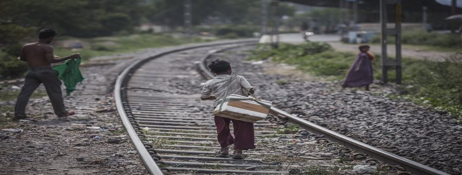
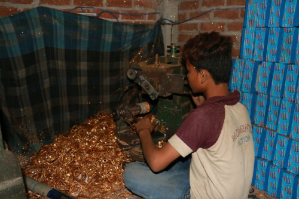
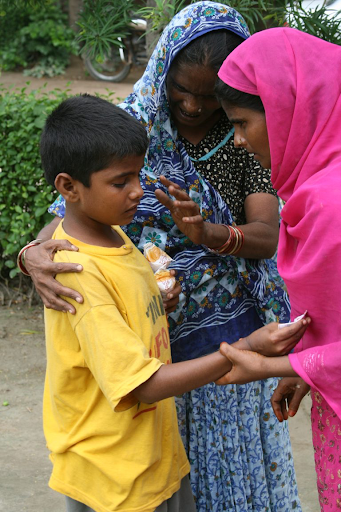

Child Labour-
Child labour for a long time has been a illegal practice in India. Not only does the practice violates our long standing principle of human rights but also lie as a prominent impediment to a happy and safe society.
Fighting child labor requires a multi-pronged push, and there is a need to make this a people's issue. We must take into consideration ending child labour is not a days work, but a cumulative effort of a decade or more.
As sir Abraham Lincoln said : “A child is a person who is going to carry on what you have started- the fate of humanity is in his hands.”
Here are some tips you could adopt in order to put a full stop to child Labour-
- First and foremost report it to the nearest police station so that swift action can be taken. Moreover our site serves a suitable reporting venue for such crimes.
- The most suitable method is to discourage firms and factories from employing children below the age of 14.
- Support and promote NGOs which are dedicated to saving and serving children. It would be best if you could donate to such organisations as well.
- Sending more children to school.
- Volunteer with some pioneer movements /organisations working to eradicate child labour.
- Educate yourself on the laws.
- Be a conscientious citizen.